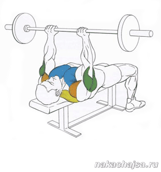

Помощь
Упражнения
Жим узким хватом:
Жим штанги лежа узким хватом это упражнение качает внутреннюю часть груди и трицепс.
Техника выполнения упражнения:
Лягте на скамью, так чтоб ваша голова оказалась под грифом, ноги поставьте чуть в стороны и упритесь стопами в пол. Руками возьмитесь за гриф (расстояние между руками 25-35см) глубоко вдохните и снимите штангу со стоек. Это исходное положение, опустите штангу к груди и подымайте ее в верх и выдыхайте в конце подъема, когда самая большая нагрузка, и так повторяйте. В конце выполнения всех повторений заставьте штангу на стойки. Не забывайте что возле вас должен быть человек который вас будет страховать, если вес окажется затяжелый, особенно когда вы будете выполнять последнии разы упражнения, вы можете опустить штангу на грудь, а назад поднять вверх у вас уже не хватит сил. Как дышать во время этого упражнения. Вдыхаете перед подъемом штанги, и при подъеме штанги выдыхаете воздух в конце подъема.